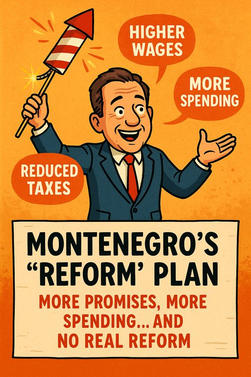

Publicado em 2025-06-18 09:02:03
Por Francisco Gonçalves & Augustus Veritas
Luís Montenegro apareceu no palco da governação como quem promete um concerto sinfónico, mas veio com uma flauta desafinada e um tambor a pilhas. O seu programa de governo, apresentado com pose de estadista e slides bonitos, é um manifesto de intenções que mistura milagre financeiro com contorcionismo político. Ou seja, é a mesma receita que nos trouxe até à borda do precipício... agora com transição digital.
Vamos por partes. Montenegro promete:
É o equivalente político a um cozinheiro que promete mais pratos, mais qualidade, menos tempo de espera e... com menos ingredientes e sem aumentar o orçamento.
Talvez escondido debaixo do tapete orçamental, ou no bolso fundo da famigerada "bazuca europeia". O problema é que essa bazuca já anda a disparar para todos os lados há anos, e em vez de obras, temos powerpoints, estudos, assessores e mais gabinetes com nomes pomposos que ninguém sabe o que fazem.
O que não se vê neste programa:
Este programa mais parece saído de uma reunião entre Harry Potter, o Professor Marcelo (Dumbledore reformado) e um contabilista em burnout. Tudo é possível, desde que ninguém faça perguntas sobre contas.
Aliás, se tivermos sorte, até os impostos baixam e as pensões sobem... num ano em que o PIB estagna, a produtividade não avança e o setor exportador é esmagado pelo custo da energia e da burocracia.
Nada muda. A administração continua opaca, os jovens continuam a emigrar, os reformados a contar tostões, e os amigos do regime continuam a ganhar contratos públicos. A única reforma visível é a reforma dos slogans.
“Modernizar sem tocar em nada” é o novo lema da governação. “Reformar com consensos” é o novo código para não mexer onde dói.
Montenegro quer reformar o Estado como quem muda os cortinados de uma casa em ruínas. É bonito, rende fotos e discursos, mas o povo continua a pagar a renda de um castelo enquanto vive num barraco.
No fundo, é um programa de continuidade com énfase na cosmética. A mediocridade permanece intacta. A coragem ficou na gaveta. E Portugal... esse continua na fila para o milagre que nunca chega.
Publicado em www.fragmentoscaos.eu